Certified for Apple, Samsung, and Google devices. Micro-soldering, precision teardowns, and deep diagnostic software bring advanced consumer electronics back to factory condition — including the failures most shops turn away.
Phones
Every make, down to the board
Most phone failures are not what the symptom suggests. A device that will not charge is rarely a bad port, a phone stuck in a boot loop is rarely a bad screen, and a swollen battery has usually been telling on itself for months. Diagnosis comes first — schematic in one hand, meter in the other — so the repair addresses the actual fault instead of replacing parts until something works.
That covers the routine work on any brand: screens, batteries, charge ports, cameras, speakers, and back glass. It also covers what happens when the routine work is not enough and the problem lives on the logic board itself.
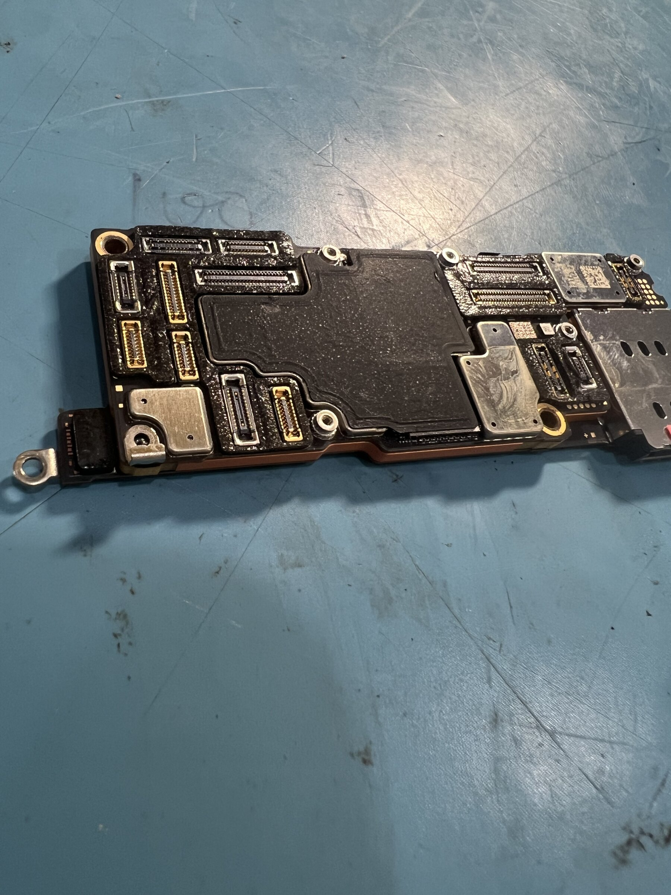
Logic board out for board-level diagnosis
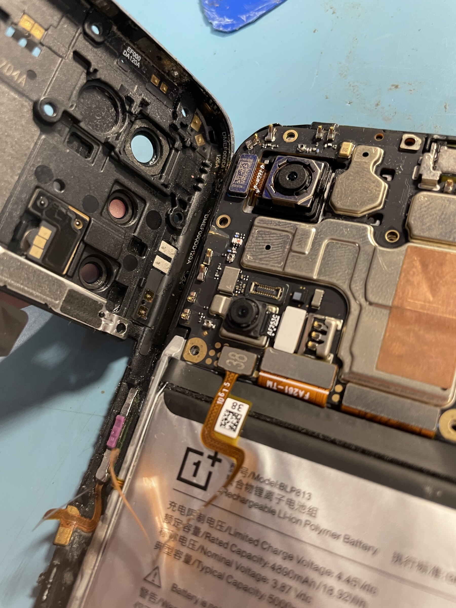
OnePlus teardown, battery and camera access
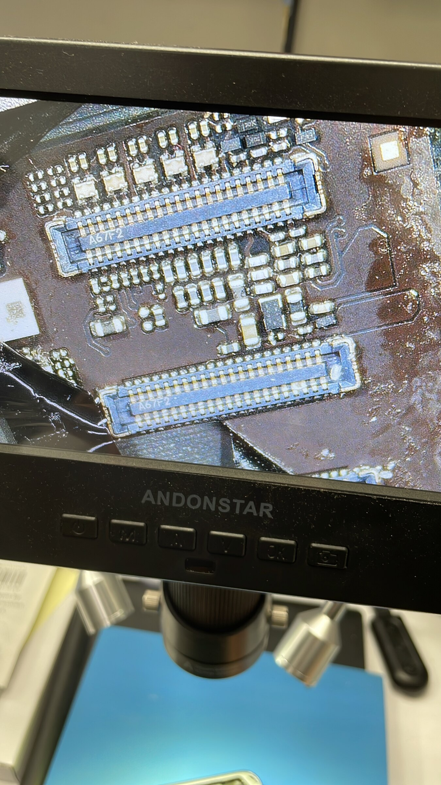
Display FPC connectors under the microscope
iPhone & iPad
Apple certified · screens to microsoldering
Anton is Apple certified, which matters most for the work that sits past a parts swap. Modern iPhones and iPads pair components to the board, so a screen, battery, or camera fitted without the right transfer procedure leaves the device complaining about itself forever. Done correctly, True Tone, Face ID, battery health reporting, and camera calibration all survive the repair.
The full range is on the table: cracked screens and back glass, batteries, charge ports, cameras, speakers, and water damage. Where the fault is on the board — a failed power rail, a lifted pad, corrosion under a shield, a chip that needs reballing — the fix happens under the microscope with hot air and a fine iron rather than by replacing the whole board.
Data recovery is its own category. When a device will not boot and the photos are not backed up anywhere, the goal changes: keep the NAND intact, bring the board up just far enough to read it, and get the data off. That work is delicate and it is often the reason a device arrives here after being written off somewhere else.
iPad opened for logic board and battery service
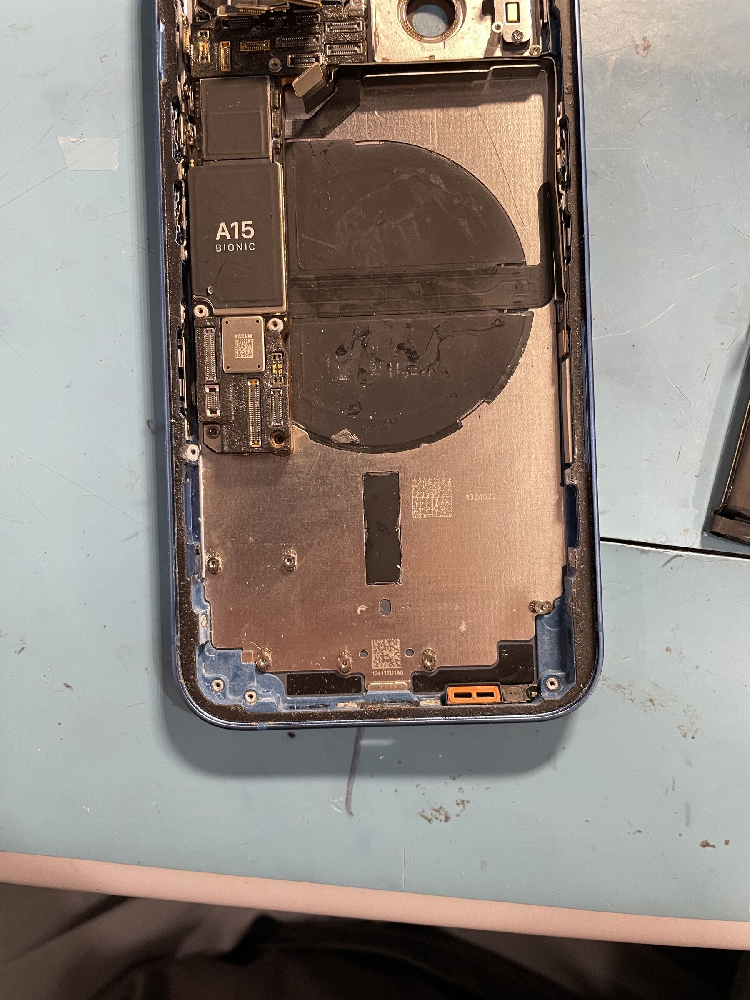
A15 Bionic board and MagSafe coil exposed
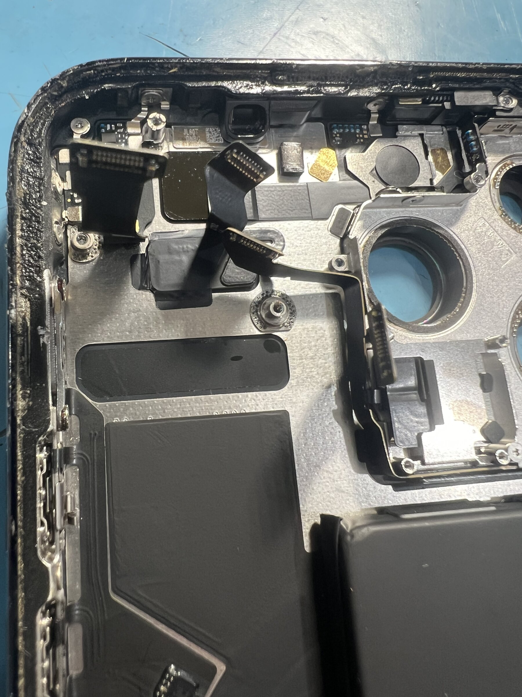
Chassis stripped for camera and flex cable work
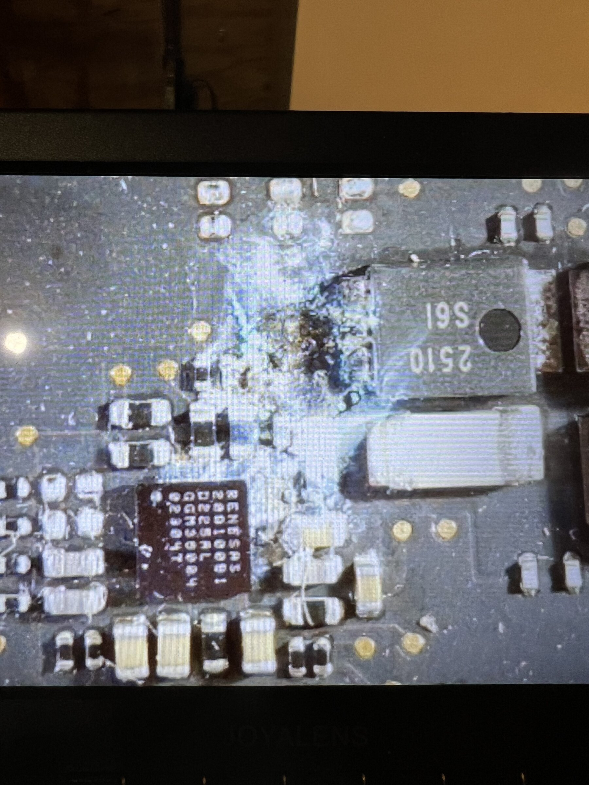
Liquid damage and corrosion, magnified before cleanup
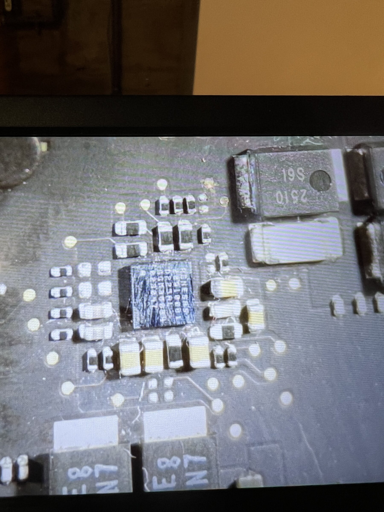
Component off, pads inspected before the rework
Back in service and fully functional
Samsung
S Series · A Series · Note Series · Tab Series
Samsung repair is a different discipline from Apple repair, mostly because of how the devices are built. Flagship S and Note bodies open from the back through heavy adhesive and a glass panel that does not want to survive the process, and the display is bonded to the frame rather than sitting in it. Getting in without destroying what you came to save is half the job.
Across the S Series, A Series, Note Series, and Tab Series, that means curved AMOLED display assemblies, battery replacement on cells that are glued down hard, charge port board swaps, rear glass, and camera modules. Note and Ultra models add the S Pen digitizer layer, which has to be handled as part of the display assembly rather than as a separate component.
The A Series tends to arrive with the honest wear of a daily driver — screens, batteries, ports — and it is worth repairing far longer than most people assume. Tab Series work is closer to tablet repair generally: large bonded panels, big battery packs, and a lot of patience with heat.
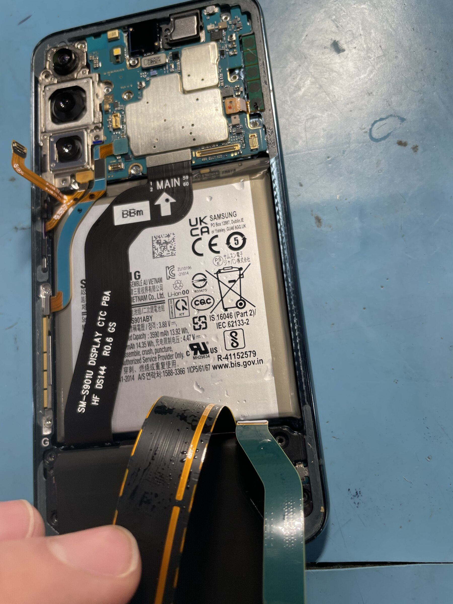
Battery out on the pull tab, adhesive released
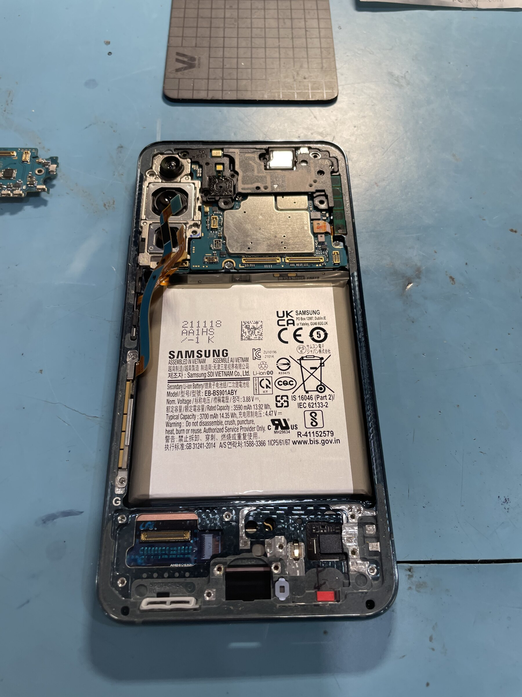
S Series opened for battery and board access
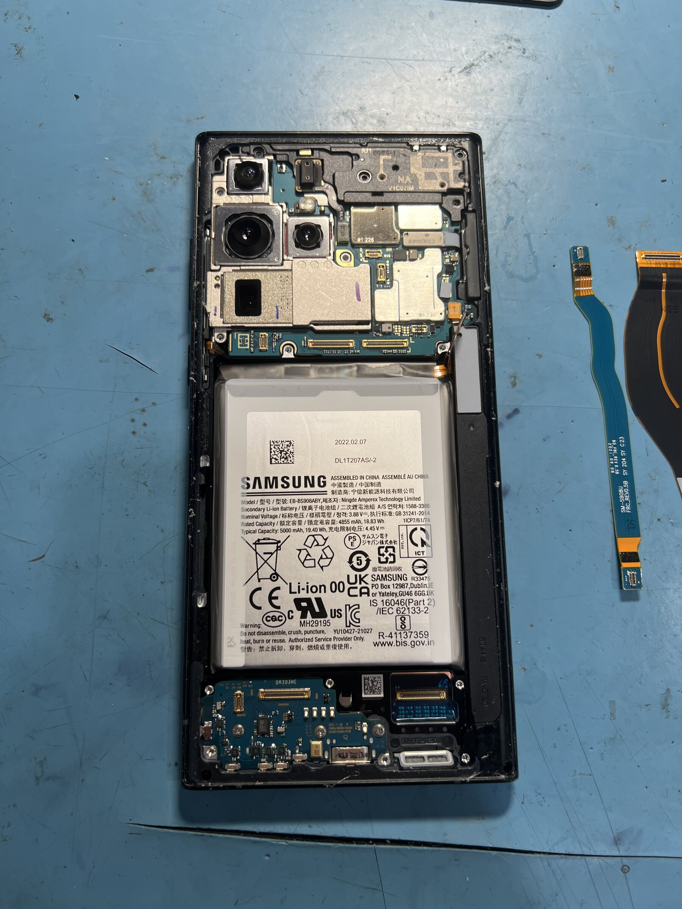
Ultra teardown with the display flex removed
MacBooks, Apple Computers & Gaming Laptops
Thermals, power delivery, board repair
Laptops fail in ways phones do not, and the two most common causes are heat and liquid. A gaming laptop that throttles under load, shuts down mid-session, or runs its fans flat out at idle is usually telling you its thermal paste has aged out and its heat pipes are packed with dust. That is a service job, not a replacement job, and the performance recovery afterward is dramatic.
Liquid is less forgiving. On a MacBook, spilled liquid tracks along the board and eats the power delivery circuitry, so the machine either shows no sign of life or wakes and dies. Recovery is board-level work: clean the corrosion, trace the rails against the schematic, find the shorted component, and replace it — rather than quoting a whole new logic board.
Beyond that, the usual list: screen and hinge replacement, keyboards and trackpads, battery replacement on cells that are swelling and pressing the trackpad upward, SSD and RAM upgrades where the design still allows them, DC jack and charge circuit repair, and data recovery from drives in machines that will not boot.
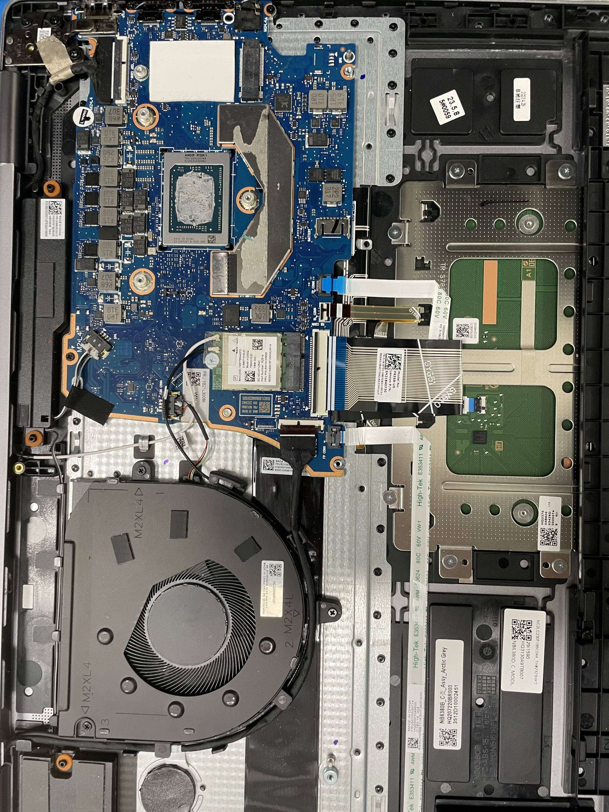
Bottom case off for thermal service and board access
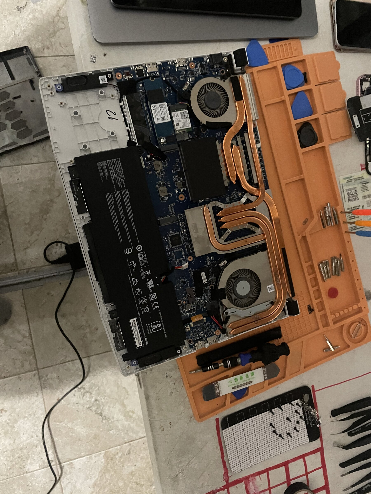
Full teardown on the mat, dual-fan cooling assembly out
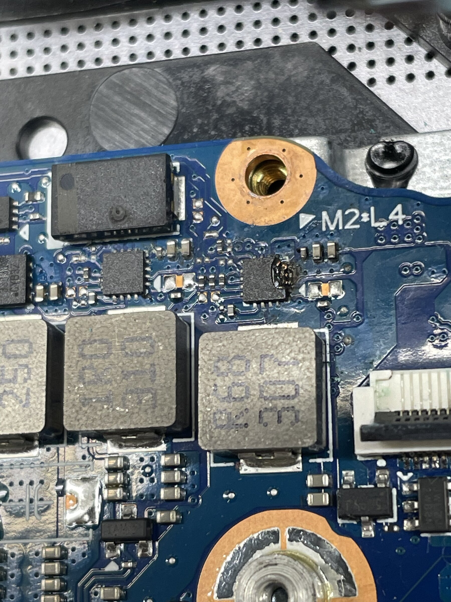
Power delivery stage beside the M.2 slot
Also on the Bench
Systems, consoles and aircraft
Desktops & Infrastructure
Gaming PCs · Server racks · Corporate
Custom gaming desktop builds, diagnosis, and rescue work: unstable overclocks, failing power supplies, GPU faults, thermal throttling, and the boot problems that turn out to be one bad stick of RAM. On the infrastructure side, rack builds and maintenance, drive replacement and array rebuilds, network hardware, and the unglamorous work of keeping a small business running — imaging and deploying fleet machines, migrating data, and handling the failures before they become downtime.
Game Consoles
PlayStation · Xbox · Nintendo Switch
PlayStation and Xbox consoles arrive overheating, running loud, ejecting discs on their own, or refusing HDMI output entirely — and HDMI port replacement is board-level microsoldering, not a plug swap. Full thermal service, fan and PSU replacement, and drive upgrades round out the rest. Nintendo Switch work is its own specialty: Joy-Con drift, charge port replacement, the fragile ribbon cables inside the rails, and screen and digitizer replacement on both the LCD and OLED models.
Drones
DJI & all platforms
Crash damage is the common arrival: bent or snapped arms, cracked shells, damaged gimbals, and motors that grind after a hard landing. DJI gimbal and camera assemblies are precision components and need calibration after service, not just reassembly. Also handled — ESC and motor replacement, flight controller diagnosis, battery health assessment on packs that are no longer holding balance, and firmware issues on aircraft that will not arm or link to the controller.
Bring It In
Fast turnarounds and uncompromising standards define the workbench. If a device has already been declared unrepairable somewhere else, it is still worth a look — that is frequently what board-level work is for.